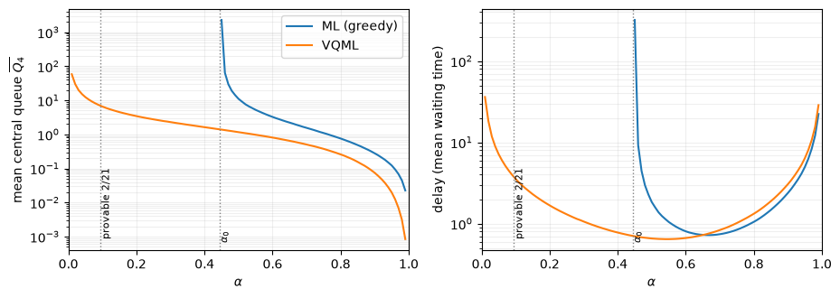

Online Stochastic Matchings: Stability on Hypergraphs#
This is the companion notebook of the paper Online Stochastic Matchings: Stability on Hypergraphs.
It covers the numerical claims of the paper, focusing on the candy hypergraph:
The characterization of stability.
model.stabilizabledecides any \((G,\lambda)\);model.maximingives the witness flow \(\mu\);model.incidencegives the matrix.The candy’s closed-form stability region, checked against
model.stabilizable.Regular greedy ML vs. VQML on the candy \(\alpha\)-family (the paper’s figure).
The provable greedy-instability threshold \(\alpha<2/21\): the domination and throughput-conservation ingredients.
Accessibility and tie-breaking of the virtual chain: proof-level combinatorics.
[1]:
import numpy as np
import matplotlib.pyplot as plt
import multiprocess as mp
import stochastic_matching as sm
from stochastic_matching import XP, Iterator, evaluate
print("stochastic_matching:", sm.__version__)
np.set_printoptions(precision=4, suppress=True)
stochastic_matching: 0.4.0
First, recall the candy structure: two triangles bridged by a hyperedge that includes a seventh node:
[6]:
candy = sm.HyperPaddle()
print("candy incidence A (from model.incidence):")
print(np.asarray(candy.incidence), "\n")
candy.show_graph()
candy incidence A (from model.incidence):
[[1 1 0 0 0 0 0]
[1 0 1 0 0 0 0]
[0 1 1 0 0 0 1]
[0 0 0 0 0 0 1]
[0 0 0 1 1 0 1]
[0 0 0 1 0 1 0]
[0 0 0 0 1 1 0]]
Characterization of stability#
The package decides stabilizability directly: model.stabilizable is True iff the maximin conservation flow is strictly positive and the incidence matrix is surjective, i.e. conditions (iii)/(iv) of the main theorem. When stabilizable, model.maximin is a positive witness \(\mu\) with \(A\mu=\lambda\); when not, either the flow has a non-positive coordinate (the cone is left) or \(A\) is rank-deficient.
Note: The dual certificate \(y\) of condition (ii) is stated in the paper; the package works directly with the primal witness.
We will use the report function to observe a few cases.
[7]:
def report(name, model):
A = np.asarray(model.incidence)
mu = np.asarray(model.maximin)
rank, n = np.linalg.matrix_rank(A), A.shape[0]
print(f"{name}")
print(f" stabilizable = {model.stabilizable} "
f"(rank A = {rank} of {n}; maximin min = {mu.min():.3f})")
print(f" maximin flow mu = {mu.round(4)}")
[10]:
candy.rates = [1, 1, 0.9, 0.3, 0.9, 1, 1]
report("candy, alpha-family (alpha=0.3): lambda=(1,1,3a,a,3a,1,1)", candy)
candy.show_flow()
candy, alpha-family (alpha=0.3): lambda=(1,1,3a,a,3a,1,1)
stabilizable = True (rank A = 7 of 7; maximin min = 0.300)
maximin flow mu = [0.7 0.3 0.3 0.3 0.3 0.7 0.3]
[15]:
candy.rates = [1, 1, 1, 5, 1, 1, 1]
report("candy, center overloaded λ_4=5", candy)
candy.show_flow()
candy, center overloaded λ_4=5
stabilizable = False (rank A = 7 of 7; maximin min = -2.000)
maximin flow mu = [ 3. -2. -2. -2. -2. 3. 5.]
[17]:
model = sm.Model(incidence=[[0, 1, 1, 0], [0, 0, 1, 1], [1, 1, 1, 1]], rates=[1, 1, 2])
report("rem:wall degenerate (stabilizable; every basic solution degenerate)", model)
model.show_kernel(disp_flow=True)
rem:wall degenerate (stabilizable; every basic solution degenerate)
stabilizable = True (rank A = 3 of 3; maximin min = 0.500)
maximin flow mu = [0.5 0.5 0.5 0.5]
[19]:
model = sm.Model(incidence=[[1], [1], [1]], rates=[1, 1, 1])
report("Moyal single 3-hyperedge {1,2,3} (rank 1 < 3)", model)
model.show_kernel(disp_flow=True)
Moyal single 3-hyperedge {1,2,3} (rank 1 < 3)
stabilizable = False (rank A = 1 of 3; maximin min = 1.000)
maximin flow mu = [1.]
[21]:
model = sm.Model(incidence=[[1, 0], [1, 0], [1, 1], [0, 1]], rates=[1, 1, 2, 1])
report("Moyal RM21 Prop-4 flavor: {1,2,3}+{3,4}, classes 1,2 degree one", model)
model.show_kernel(disp_flow=True)
Moyal RM21 Prop-4 flavor: {1,2,3}+{3,4}, classes 1,2 degree one
stabilizable = False (rank A = 2 of 4; maximin min = 1.000)
maximin flow mu = [1. 1.]
The candy’s closed-form stability region#
For the candy \(A\) is square and invertible, so stabilizability \(\iff\) the unique solution of \(A\mu=\lambda\) is strictly positive, which solves to
Recipe for the formula above:
The 3-edge must be \(\lambda_4\), leaving \(\bar{\lambda_3}=\lambda_3-\lambda_4\) and \(\bar{\lambda_5}=\lambda_5-\lambda_4\) for nodes 3 and 5.
That leaves the triangles \(\lambda_1\), \(\lambda_2\), \(\bar{\lambda_3}\), and \(\lambda_6\), \(\lambda_7\), \(\bar{\lambda_5}\), which must uphold the triangular inequality.
Triangular inequality for \(a\), \(b\), \(c\): \(|b-c|<a<b+c\).
One can check this closed form against model.stabilizable on random rate vectors.
[22]:
def candy_closed_form(lam):
l1, l2, l3, l4, l5, l6, l7 = lam
return (abs(l1 - l2) < l3 - l4 < l1 + l2) and (abs(l7 - l6) < l5 - l4 < l6 + l7)
rng = np.random.default_rng(0)
mism = 0
for _ in range(20000):
lam = rng.uniform(0.2, 3.0, size=7)
if candy_closed_form(lam) != sm.HyperPaddle(rates=list(lam)).stabilizable:
mism += 1
print(f"closed form vs model.stabilizable over 20000 random rate vectors: {mism} mismatches")
closed form vs model.stabilizable over 20000 random rate vectors: 0 mismatches
Greedy Match-the-longest (ML) vs. VQML on the candy \(\alpha\)-family#
\(\lambda^{(\alpha)}=(1,1,3\alpha,\alpha,3\alpha,1,1)\) is stabilizable for every \(\alpha\in(0,1)\), with the five inner edges having rate \(\alpha\) and the two outer edges having rate \(1-\alpha\).
Note that the extremal values, 0 and 1, yield an unstable problem (the support of the unique solution is not surjective).
Greedy match-the-longest lets the central queue explode for \(\alpha < \alpha_0\), while VQML stays stable in \((0, 1)\).
Step #1: estimate \(\alpha_0\)
[23]:
steps_done = 10_000_000
common = {'n_steps': steps_done, 'seed': 12, 'max_queue': 10_000}
def candy_at(alpha):
return sm.HyperPaddle(rates=[1.0, 1.0, 3 * alpha, alpha, 3 * alpha, 1.0, 1.0])
[24]:
αmin = 0.0
αmax = 1.0
ϵ = .001
with mp.Pool() as pool:
span = pool._processes
while αmax - αmin > ϵ:
alphas = [αmin + (αmax - αmin)*i/(span+1) for i in range(1, span+1)]
xp = XP('ML', simulator='longest',
iterator=Iterator('model', alphas, name='alpha', process=candy_at), **common)
res = evaluate(xp, ['steps_done'], pool)
if res['ML']['steps_done'][0] == steps_done:
αmax = alphas[0]
else:
for i in range(1, span):
if res['ML']['steps_done'][i] == steps_done:
αmin, αmax = alphas[i-1], alphas[i]
break
else:
αmin = alphas[-1]
α0 = (αmin+αmax)/2
α0
[24]:
0.4456543863220029
We then sweep \(\alpha\).
We plot two metrics side by side: the mean central queue \(\overline{Q_4}\) (the coordinate the instability proof bounds, and the paper’s figure) and the package’s built-in delay (mean waiting time by Little’s law, \(\sum_i\overline{Q_i}/\Lambda\)).
Both show the same thing on the left: greedy blows up as \(\alpha\to \alpha_0\) while VQML goes to 0, so the separation does not hinge on singling out node~4.
At large \(\alpha\), delay and \(\overline{Q_4}\) differ (the instability comes from outer nodes).
Also note that for delay and large \(\alpha\), the curves cross: VQML carries slightly more global delay than greedy. It is understandable, since VQML is a maximally stable witness through a reservation mechanism, not a delay optimizer.
[25]:
# Metrics run in pool workers (shipped by value via dill), so keep them
# self-contained: no module globals. Node 4 = 0-based index 3.
def central_queue(simu):
return float(simu.avg_queues[3])
alphas = [i/100 for i in range(1, 100)]
alphas2 = [i/100 for i in range(int(α0*100)+1, 100)]
xp = XP('ML', simulator='longest',
iterator=Iterator('model', alphas2, name='alpha', process=candy_at), **common)
xp += XP('VQML', simulator='virtual_queue',
iterator=Iterator('model', alphas, name='alpha', process=candy_at), **common)
with mp.Pool() as pool:
res = evaluate(xp, ['steps_done', central_queue, 'delay'], pool)
[26]:
fig, axes = plt.subplots(1, 2, figsize=(9.4, 3.4), sharex=True)
panels = [('central_queue', r'mean central queue $\overline{Q_4}$'),
('delay', r'delay (mean waiting time)')]
for ax, (key, ylabel) in zip(axes, panels):
# yml, yvq = np.array(ml[key]), np.array(vq[key])
ax.semilogy(res['ML']['alpha'], res['ML'][key], ms=4, label='ML (greedy)')
ax.semilogy(res['VQML']['alpha'], res['VQML'][key], ms=5, label='VQML')
ax.axvline(2 / 21, color='gray', ls=':', lw=1)
ax.text(2 / 21, 0.03, ' provable 2/21', rotation=90, va='bottom', fontsize=8,
transform=ax.get_xaxis_transform())
ax.axvline(α0, color='gray', ls=':', lw=1)
ax.text(α0, 0.03, '$\\alpha_0$', rotation=90, va='bottom', fontsize=8,
transform=ax.get_xaxis_transform())
ax.set_xlabel(r'$\alpha$'); ax.set_ylabel(ylabel)
ax.set_xlim(0, 1); ax.grid(True, which='both', alpha=0.2)
axes[0].legend()
plt.tight_layout(); plt.show()

The provable greedy-instability threshold \(\alpha<2/21\)#
For \(\alpha<2/21\approx0.095\) no greedy policy is stable. The proof combines a triangle/hyperedge invariant, an \(M/M/1\) domination giving \(\Pr(Q_3>0)\le 3\alpha/2\), and the throughput identity \(r_h=\lambda_4\). We corroborate the two ingredients where ML is stable (\(\alpha\ge0.5\)).
[27]:
# Self-contained metrics (run in pool workers). Bridge = node 3 (0-based 2),
# hyperedge {3,4,5} = edge index 6.
def p_bridge(simu): # P(Q_bridge > 0) by PASTA
return 1.0 - simu.logs.queue_log[2, 0] / simu.logs.steps_done
def rate_h_time(simu): # hyperedge firings per unit time
return float(simu.logs.traffic[6] / simu.logs.steps_done * sum(simu.model.rates))
xp4 = XP('greedy', simulator='longest', model=None, n_steps=1_000_000, seed=1, max_queue=4000,
iterator=Iterator('model', [0.5, 0.6, 0.7, 0.8], name='alpha', process=candy_at))
with mp.Pool() as pool:
r4 = evaluate(xp4, [p_bridge, rate_h_time], pool)['greedy']
for a, pb, rh in zip(r4['alpha'], r4['p_bridge'], r4['rate_h_time']):
print(f"alpha={a:.2f}: P(Qbridge>0)={pb:.3f} <= 3a/2={1.5*a:.3f}? {pb <= 1.5*a + 1e-3}; "
f"rate(h)={rh:.4f} vs lambda_4={a:.4f} (conservation)")
print("\nProvable threshold 2/21 =", round(2 / 21, 4), "; simulated ML threshold ~0.45.")
alpha=0.50: P(Qbridge>0)=0.220 <= 3a/2=0.750? True; rate(h)=0.4960 vs lambda_4=0.5000 (conservation)
alpha=0.60: P(Qbridge>0)=0.345 <= 3a/2=0.900? True; rate(h)=0.5949 vs lambda_4=0.6000 (conservation)
alpha=0.70: P(Qbridge>0)=0.489 <= 3a/2=1.050? True; rate(h)=0.6947 vs lambda_4=0.7000 (conservation)
alpha=0.80: P(Qbridge>0)=0.651 <= 3a/2=1.200? True; rate(h)=0.7928 vs lambda_4=0.8000 (conservation)
Provable threshold 2/21 = 0.0952 ; simulated ML threshold ~0.45.
Accessibility and tie-breaking of the virtual chain#
Two structural facts about the signed virtual queue \(Q\). These are proof-level combinatorics (a custom adversarial tie-break rule, and a deterministic steering word) that the package’s virtual_queue simulator does not expose as knobs, so we check them directly with numpy.
(a) The :math:`I_2` trap (tie-breaking remark). Take \(A=I_2\) (two mono-edges), \(\lambda=(1,1)\), and a legal deterministic maximizer rule that violates the idle clause (among maximizers, prefer \(2e_1, e_1, 2e_2, 0, e_2, e_1+e_2\)). The set reachable from \(0\) then has 9 states, with \(0\) visited exactly once and a 7-state absorbing class. So the idle clause is what the accessibility argument needs.
(b) Steering to :math:`0` (accessibility lemma). Under the canonical idle clause, the Appendix-A steering drives \(Q\) to \(0\) from every state within \(\lVert q\rVert_1 + 2 a_{\max} V(q)\). We run it from many mixed-sign start states over a suite of incidence matrices (from the package where available).
[28]:
import itertools
# (a) adversarial I2 tie-break trap
A_I2 = np.eye(2, dtype=int)
feas = [s for s in itertools.product(range(3), repeat=2) if sum(s) <= 2]
pref = [(2, 0), (1, 0), (0, 2), (0, 0), (0, 1), (1, 1)] # most preferred maximizer first
def i2_rule(q):
scores = {s: int(np.array(q) @ (A_I2 @ np.array(s))) for s in feas}
best = max(scores.values())
cand = [s for s in feas if scores[s] == best]
return next(s for s in pref if s in cand)
start = (0, 0); seen = {start}; frontier = [start]; edges = {}
while frontier:
q = frontier.pop(); s = np.array(i2_rule(q)); succ = set()
for a in ([1, 0], [0, 1]):
qp = tuple(np.array(q) + np.array(a) - (A_I2 @ s)); succ.add(qp)
if qp not in seen: seen.add(qp); frontier.append(qp)
edges[q] = succ
def freach(src):
acc = {src}; st = [src]
while st:
for v in edges.get(st.pop(), ()):
if v not in acc: acc.add(v); st.append(v)
return acc
reach = {u: freach(u) for u in seen}
sccs = []; done = set()
for u in seen:
if u in done: continue
comp = {v for v in seen if v in reach[u] and u in reach[v]}
sccs.append(comp); done |= comp
bottom = sorted(len(c) for c in sccs if all(edges[u] <= c for u in c))
reenter = start in {v for x in edges[start] for v in reach[x]}
print(f"(a) I2 trap: reachable from 0 = {len(seen)} (paper 9); "
f"0 re-enterable = {reenter} (paper False); absorbing SCC sizes = {bottom} (paper [7])")
# (b) steering to 0 under the canonical idle clause
def steer_to_zero(A, q0):
A = np.asarray(A, int); n, m = A.shape
a_max = max(int(A[:, k].sum()) for k in range(m))
q = np.array(q0, int)
bound = int(np.abs(q).sum()) + 2 * a_max * int(np.maximum(q, 0).sum())
steps = 0
while np.any(q != 0):
if steps > bound: return False, steps, bound
scores = A.T @ q
if scores.max() <= 0: # idle: drain a negative coord
q = q + np.eye(n, dtype=int)[int(np.argmin(q))]
else: # active: s = 2 e_kstar
r = q - 2 * A[:, int(np.argmax(scores))]
neg = np.where(r <= -1)[0]
q = r + np.eye(n, dtype=int)[int(neg[0]) if neg.size else 0]
steps += 1
return True, steps, bound
suite = {
"I2": A_I2,
"candy": np.asarray(sm.HyperPaddle(rates=[1, 1, 1, 1, 1, 1, 1]).incidence), # incidence from package
"rem:wall": np.array([[0, 1, 1, 0], [0, 0, 1, 1], [1, 1, 1, 1]]),
"Moyal {1,2,3}": np.array([[1], [1], [1]]),
"Moyal {1,2,3}+{3,4}": np.array([[1, 0], [1, 0], [1, 1], [0, 1]]),
}
rng2 = np.random.default_rng(0); total = good = 0
for name, A in suite.items():
for _ in range(200):
reached, steps, bound = steer_to_zero(A, rng2.integers(-4, 6, size=A.shape[0]))
total += 1; good += int(reached and steps <= bound)
print(f"(b) steering: {good}/{total} start states over the suite reach 0 within the bound")
(a) I2 trap: reachable from 0 = 9 (paper 9); 0 re-enterable = False (paper False); absorbing SCC sizes = [7] (paper [7])
(b) steering: 1000/1000 start states over the suite reach 0 within the bound